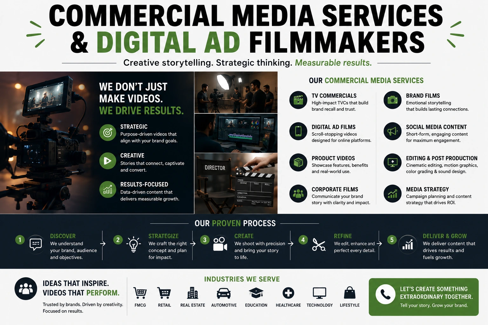

How Traditional Retailers Can Rebrand Using Digital Video Ads
The Brand That Built the City Block Cannot Be Found on Google
There are traditional retailers across Tamil Nadu — jewellers, textile houses, sweet shops, spice merchants, handloom weavers — who have been trusted by their communities for two, three, and four generations. Their products are superior. Their heritage is irreplaceable. Their customer relationships are genuine. And yet a digitally native brand that launched eighteen months ago, with a fraction of the product quality and none of the heritage, is capturing the next generation of their customers — because it has professional visual content, a consistent digital presence, and the ability to be discovered on Instagram and Google.
This is the core challenge of traditional business digital transformation for Indian retailers in 2026: not the absence of brand value, but the absence of brand visibility in the formats and on the platforms where that value needs to be communicated. The solution is not to become something the brand is not. It is to communicate what the brand already is — with the visual quality, the production standards, and the platform strategy that modern advertising for old brands requires.
Digital ad filmmakers, brand promotion photography, ethnic product catalog shoots, and commercial media services are the specific production investments that close this visibility gap — taking a traditional retailer's genuine brand assets and translating them into the visual language of the platforms where their next customers are looking.
Why Heritage Is a Digital Advantage — If It Is Communicated Correctly
Indian consumers in 2026 are experiencing a specific cultural tension: the convenience and discovery of digital shopping alongside a growing appetite for authenticity, heritage, and the provenance of what they buy. Fast fashion is losing ground to handloom. Mass-market jewellery is losing ground to artisan craft. Generic spice brands are losing ground to region-specific, traditionally sourced products. This is not a niche trend — it is a mainstream shift in purchasing values that traditional retailers are uniquely positioned to serve.
But positioning advantage only converts to commercial advantage when it is visible. A traditional retailer whose brand story — the craft, the heritage, the people, the process — is invisible on digital platforms is leaving this advantage unclaimed. Brand promotion photography and digital video are the tools that make the invisible visible: they take what exists inside the shop, the workshop, and the family's generational knowledge, and communicate it to audiences who would choose this brand over any digital competitor if they knew it existed and understood what made it different.
The brands winning this positioning battle in Indian retail in 2026 are not the ones with the largest budgets — they are the ones that understood earliest that their heritage is a content asset, and invested in the professional visual production to deploy it.
Heritage as Trust Signal
A three-generation family business communicates trust that no digital-native brand can manufacture. Professional video that documents this heritage — the founding story, the craft lineage, the community relationships — converts this trust into a brand asset that works across every digital platform and paid advertising format.
Craft as Visual Content
The making of a traditional product — a saree being woven, a piece of jewellery being set, a sweet being made by hand — is inherently cinematic content that digital audiences find genuinely compelling. Commercial media services that document this process produce content that earns organic reach and engagement no generic product ad can match.
Community as Social Proof
A traditional retailer's existing customer relationships — the families who have bought for three generations, the community events the brand has been part of, the trust built over decades — are the most powerful social proof available in digital advertising. Professional production that captures these relationships in customer testimonial videos produces conversion rates that no scripted ad creative can replicate.
Locality as Differentiation
Regional specificity — a Kanjivaram silk house in Kanchipuram, a Chettinad spice merchant in Karaikudi, a traditional brass smith in Thanjavur — is a differentiation signal that national brands cannot claim. Retail visibility solutions built around regional identity produce discoverable content for audiences actively searching for authentic regional products.
Ethnic Product Catalog Shoots: Bridging Traditional Product and Modern Discovery
The single most impactful production investment for most traditional retailers beginning their digital transformation is a professional ethnic product catalog shoot. This is the production session that generates the visual library — photographs and short video clips — that supports every digital touchpoint: the website, the Instagram grid, the WhatsApp Business catalogue, the Google Business profile, the marketplace listings, and the paid advertising creative.
Ethnic product catalog shoots for traditional retailers require a specific production approach that differs from standard e-commerce product photography:
- Cultural context in styling and art direction. A Kanjivaram saree presented on a plain white studio background loses the visual context that communicates its heritage and occasion value. The same saree presented with appropriate cultural styling — the right jewellery, the right setting, the right draping — communicates the full cultural weight of the product to the buyer who understands it and educates the buyer who does not. Art direction for ethnic product catalog shoots requires both product knowledge and visual craft — the understanding of what the product means culturally and the skill to communicate that meaning photographically.
- Craft and detail documentation. The value of a handcrafted traditional product is frequently invisible in standard photography. The zari work on a silk saree, the stone setting in a traditional piece of jewellery, the texture of a handwoven fabric — these details need macro photography and deliberate lighting to communicate the craft investment that justifies the product's price. A buyer who cannot see the detail cannot pay for the detail.
- Occasion and lifestyle context shots. Traditional products are occasion products — they are purchased for festivals, weddings, ceremonies, and significant family moments. Ethnic product catalog shoots that include lifestyle context shots — the product being worn at a family celebration, the sweet box being presented at a festival gathering, the textile being used in a home ceremony — communicate the emotional context of purchase that converts consideration into decision.
- Range and collection presentation. Traditional retailers frequently have product ranges of significant breadth and depth that are invisible to digital audiences because they have never been photographed as a coherent collection. A catalog shoot that documents the full range — with consistent styling, lighting, and composition across every product — communicates the brand's depth of offering and positions it as a serious, comprehensive source rather than a single-product discovery.
Digital Ad Filmmakers: Producing the Brand Story That Earns Discovery
Digital ad filmmakers working with traditional retailers are not producing generic commercial content — they are producing brand story films that communicate heritage, craft, and community in a format optimised for the platforms where the target audience discovers and evaluates brands. This is a specific creative discipline that combines documentary filmmaking instincts with commercial production objectives.
The video formats that consistently deliver the strongest commercial outcomes for traditional retailers undergoing modern advertising for old brands:
- The founder or family story film. A 60 to 90 second film in which the founder, or a family member who represents the brand's generational continuity, speaks directly to camera about why the business exists, what it stands for, and what it offers that no mass-market alternative can. Shot in the shop, the workshop, or a meaningful family setting — not a studio. The authenticity of the environment is part of the message. This film becomes the brand's most durable and versatile digital asset: it works as an Instagram Reel, a YouTube ad, a website hero video, a WhatsApp Business introduction, and a paid Meta awareness campaign.
- The craft process film. A 30 to 60 second film documenting the making of the product — the hands at work, the materials being transformed, the skill applied over time. For traditional retailers whose product is handcrafted, this film communicates the value of the making in a way that no product description can. It answers the buyer's most common unspoken objection — "why does this cost more than the mass-market version?" — without a single word of price justification.
- The customer community film. A compilation of real customers — families who have bought from the brand for generations, individuals whose significant life moments were marked by a purchase from this retailer — speaking authentically about their relationship with the brand. This is the most powerful retail visibility solution available to a traditional retailer: real community trust, documented professionally, distributed at digital scale.
- The product occasion film. A short-form video — 15 to 30 seconds — that connects the product to a specific upcoming occasion: a festival, a wedding season, a regional celebration. This is the format for seasonal paid advertising: timely, contextually relevant, and directly connected to the purchase intent the occasion creates. Digital ad filmmakers who understand the Indian festival and wedding calendar can plan a full year of occasion-specific content in a single production session, dramatically reducing the cost per piece of paid advertising creative.
Modern Advertising for Old Brands: The Platform Strategy
Traditional business digital transformation requires not just production investment but platform strategy — an understanding of which platforms serve which commercial objectives for a traditional retailer, and how to deploy professional visual content across them with maximum efficiency.
Instagram and Facebook
- Primary platform for brand discovery among 25 to 45 year old Indian buyers of traditional products
- Reels and Stories for organic reach through craft process and behind-the-scenes content
- Meta Ads for targeted paid distribution of the founder story film and product occasion films to lookalike audiences based on existing customer data
- Instagram Shopping for direct product discovery and purchase intent capture from catalog photography
YouTube
- Long-form craft documentation for audiences actively researching traditional products and their making
- YouTube Shorts for short-form product and occasion content with algorithmic distribution potential
- Pre-roll ads targeting audiences watching content related to Indian weddings, festivals, and traditional culture
- Brand channel as a credibility and heritage archive that communicates depth to high-intent buyers
Google and WhatsApp
- Google Business Profile updated with professional brand promotion photography and product catalog images to capture high-intent local search
- Google Shopping with professionally photographed product listings for category search discovery
- WhatsApp Business catalog with ethnic product catalog shoot images for direct customer communication and referral sharing
- Google Display retargeting using lifestyle photography for audiences who have visited the website or engaged with the brand's social content
Upgrading Local Brand Presence: The Visual Identity Transformation
Upgrading local brand presence through professional visual production is not only about advertising content — it is about the coherent visual identity that a traditional retailer presents across every digital touchpoint. Many traditional retailers have built their reputation on the quality of their product and the trust of their community, but their digital presence — the WhatsApp profile picture, the Google Business listing, the Instagram grid — communicates none of this quality.
The visual identity upgrade that commercial media services deliver for a traditional retailer typically involves:
- Brand photography that defines the visual language. A set of professional images — the shop front, the founder, the product in context, the craft process — that establishes a consistent visual identity across all digital platforms. These images replace the phone photographs and scanned print advertisements that currently represent the brand online, and they communicate instantly the level of quality and professionalism that the brand's actual products and service deserve.
- Profile and cover image production. Every digital platform — Google Business, Facebook, Instagram, WhatsApp Business, YouTube — has specific image formats for profile and cover images. Professional brand promotion photography for a traditional retailer's digital transformation includes images formatted correctly for every platform, ensuring that the first impression on every channel communicates the brand's quality consistently.
- Content template production. For traditional retailers who will be publishing their own content — festival wishes, product announcements, promotional offers — a set of branded content templates built around the professional photography ensures that every piece of self-published content maintains the visual standard set by the professional production, rather than undoing it.

Retail Visibility Solutions: The Paid and Organic Strategy
Retail visibility solutions for traditional retailers in 2026 operate on two timelines simultaneously: the paid media timeline, which generates immediate reach and discovery among targeted audiences, and the organic content timeline, which builds compounding brand visibility and algorithmic distribution over six to twelve months.
The most efficient approach for a traditional retailer beginning its digital transformation is to use paid distribution to establish initial visibility while building the organic content library that will reduce dependence on paid media over time. Specifically:
- Phase one (months one to three): Paid distribution of professional launch content. The founder story film, the craft process film, and the best ethnic product catalog shoot images are deployed as paid advertising on Meta and Google, targeting audiences defined by interest in traditional products, regional cultural identity, and occasion purchasing behaviour. This generates immediate brand awareness and website traffic without waiting for organic growth.
- Phase two (months three to six): Organic content publishing and community building. Short-form video content — craft process clips, product stories, customer features, occasion-specific content — is published consistently on Instagram and YouTube, building the brand's organic following and training the algorithm to distribute the brand's content to relevant audiences. The professional visual production quality of this content distinguishes it from amateur competitor content and earns the higher engagement rates that drive algorithmic distribution.
- Phase three (months six to twelve): Performance optimisation and content compounding. Platform data from the first two phases identifies the content formats, audience segments, and product categories that are generating the strongest commercial outcomes — enquiries, footfall, online purchases. Paid media budget is reallocated toward the highest-performing formats and audiences; organic content publishing is focused on the themes and formats that have earned the strongest engagement. The brand's digital presence begins to compound.
Commercial Media Services: What a Complete Production Partnership Delivers
For a traditional retailer undertaking traditional business digital transformation, a complete commercial media services partnership delivers the full visual asset library in a single coordinated production engagement — rather than requiring the retailer to manage separate vendors for photography, video, and digital advertising creative.
The complete asset library for a traditional retailer's digital transformation:
- Founder or family story brand film (60 to 90 seconds, cut for multiple platforms)
- Craft process film (30 to 60 seconds, short-form and long-form versions)
- Customer testimonial compilation (two to three customers, 45 to 60 seconds total)
- Product occasion films for the top three seasonal occasions relevant to the product category
- Full ethnic product catalog shoot — hero shots, detail shots, lifestyle context, collection overview
- Brand promotion photography — shop front, founder portrait, team, interior, and craft environment
- Digital platform profile and cover images formatted for every required channel
- Paid advertising creative variants — video and static — for Meta and Google campaigns
- Short-form social media cuts for Instagram Reels, YouTube Shorts, and WhatsApp Status
- Content templates for ongoing self-publishing across festivals, promotions, and product announcements
Every asset in this list can be produced in two to three coordinated production days when the brief is clear, the locations are prepared, and the creative direction is established in pre-production. The traditional retailers that approach this as individual, uncoordinated productions spend more, receive less visual coherence, and take longer to establish the consistent digital brand presence that compounds over time.
Conclusion
Traditional retailers possess brand assets that no digitally native competitor can manufacture: genuine heritage, proven craft, deep community trust, and authentic cultural knowledge. These assets are commercially decisive for a growing segment of Indian consumers in 2026 — if the brand is visible on the platforms where those consumers are looking.
Brand promotion photography, ethnic product catalog shoots, digital ad filmmakers, and commercial media services are the production investments that translate a traditional retailer's real brand value into digital visibility — enabling upgrading local brand presence without compromising the authenticity that makes the brand worth discovering. Modern advertising for old brands is not about becoming new. It is about being seen, at scale, for exactly what you already are.
At The PhD Ads, we specialise in traditional business digital transformation for Indian retailers — from ethnic product catalog shoots and brand promotion photography to founder story films, craft process videos, and complete retail visibility solutions built for brands that have earned their reputation and now need their reputation to earn its digital reach.
Key Topics
Ready to Take Your Traditional Brand Digital?
At The PhD Ads, we help traditional Indian retailers build their digital presence through professional brand promotion photography, ethnic product catalog shoots, founder story films, and complete commercial media services — one coordinated production that delivers every asset your digital transformation requires.
Email: team@e2o.in